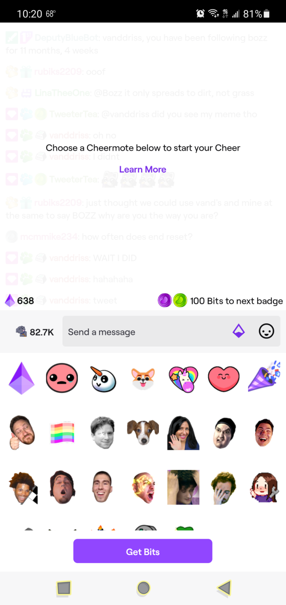
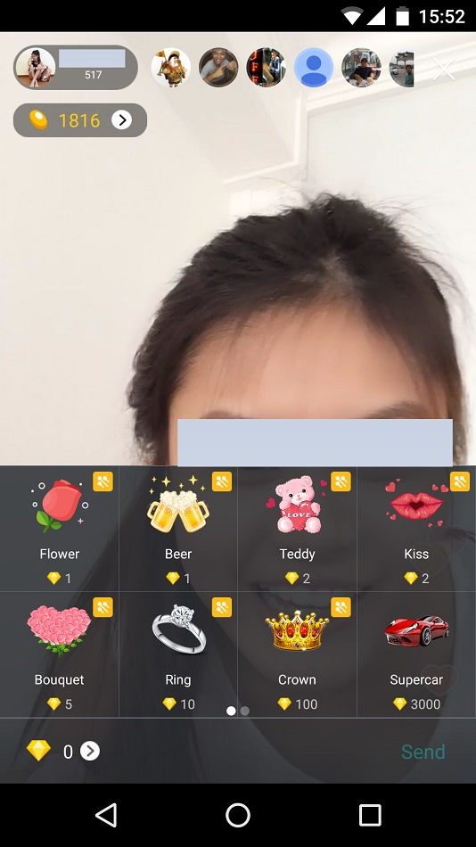

产品: 抖音直播 平台: Android 面板入口: 直播画面底部礼物入口 组织方式: 礼物/粉丝团/等级/背包/充值多标签 价值单位: 抖币 动作: 选择礼物后赠送
https://m.cyzone.cn/article/649976
比较国内外热门直播产品礼物面板的入口、礼物组织、价格表达与赠送交互，为直播送礼体验设计提供真实页面参考。
分类维度：礼物面板的组织与价值表达方式 · Agent 逐张查看本次三张 collected Mobile App Screen 后确认：抖音以底部多标签礼物抽屉组织内容，Twitch 将 Cheermote 选择嵌入直播聊天并用 Bits 表达价值，BIGO LIVE 以多分类网格和 Diamonds/Send 组织送礼。该维度来自实际 Screen 观察，不由 product_type、notes、URL 或关键词推断。 · 有效样本：3
抖音直播在直播画面下方展开礼物面板，以礼物、粉丝团、等级、背包和充值标签组织不同任务；礼物项同时展示抖币价格和赠送入口。
https://m.cyzone.cn/article/649976
Twitch 将 Cheermote 选择面板放在直播聊天输入区旁，展示 Bits 余额、Cheermote 网格和 Get Bits，送礼动作与聊天连续发生。

https://help.twitch.tv/s/article/watching-twitch-on-android-devices?language=en_US
BIGO LIVE 以 Popular、Multi、Activities、VIP 等标签切换礼物，网格直接展示 Diamonds 价格，并在选中后使用 Send 完成操作。

https://www.techinasia.com/bigo-live-streaming-app